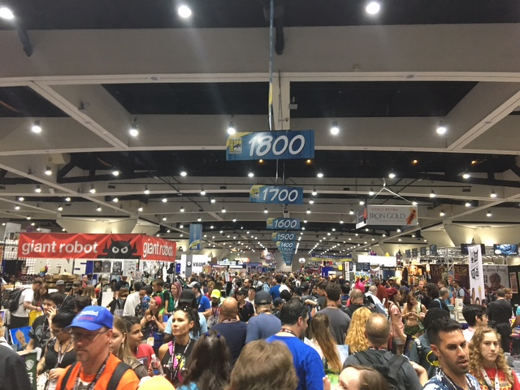
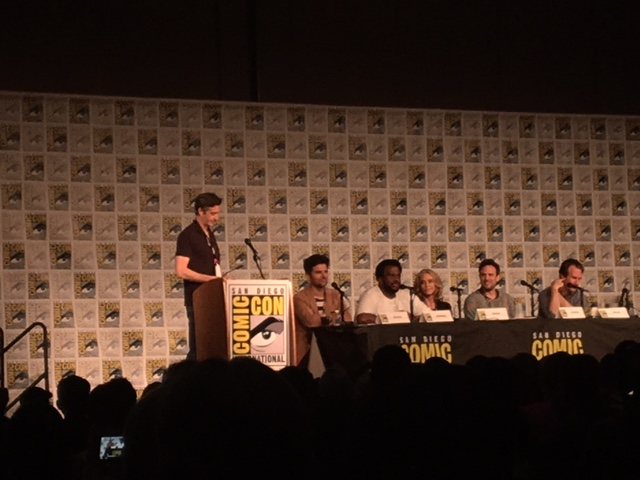
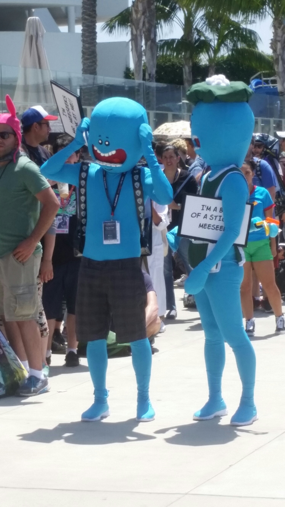
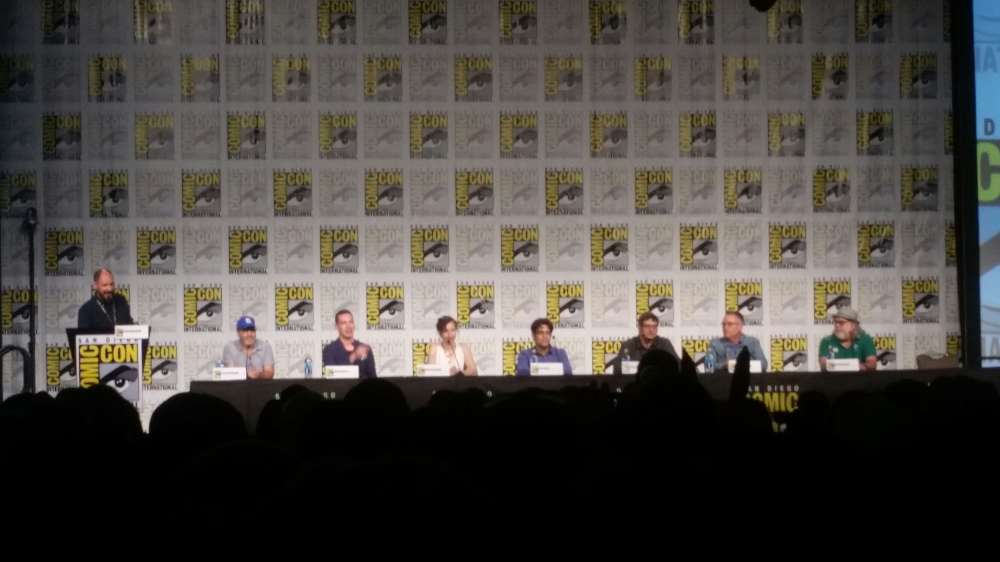
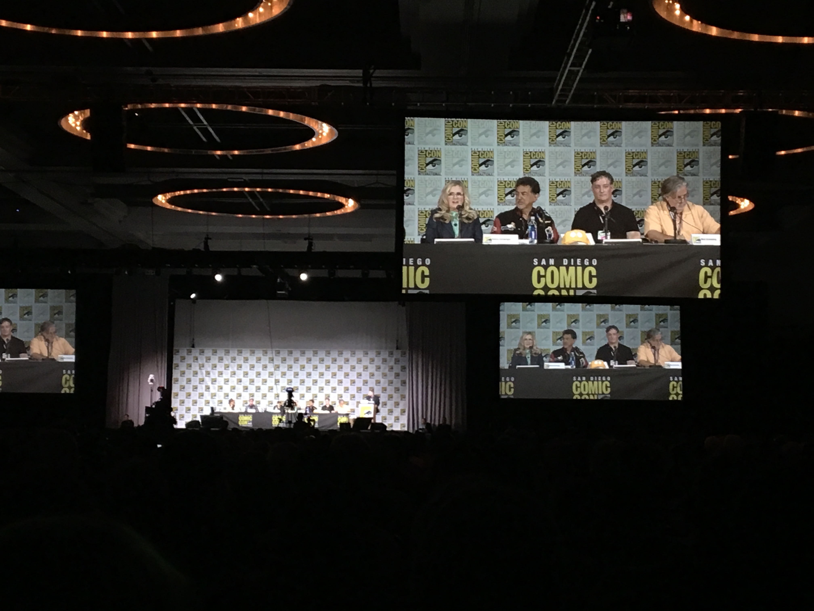
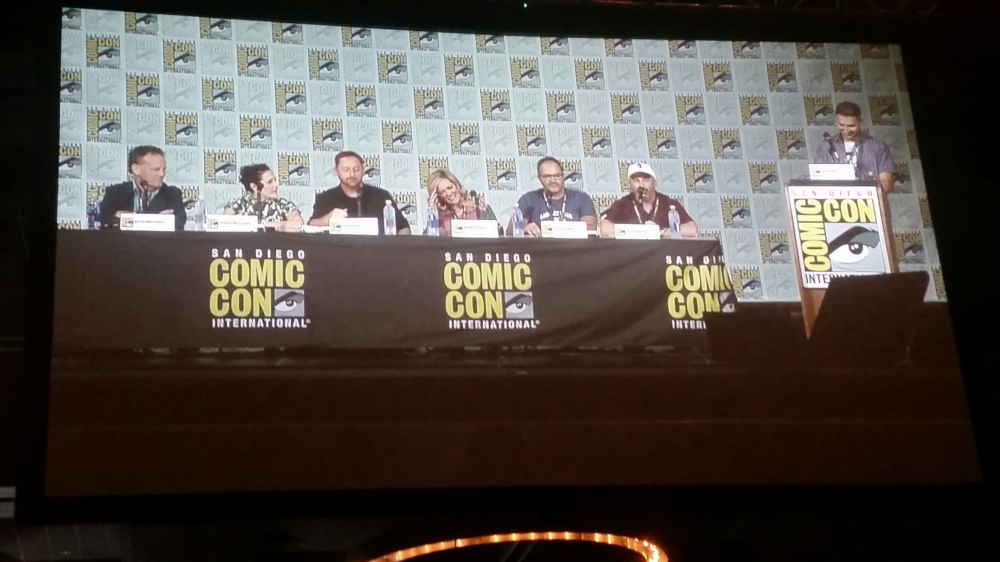
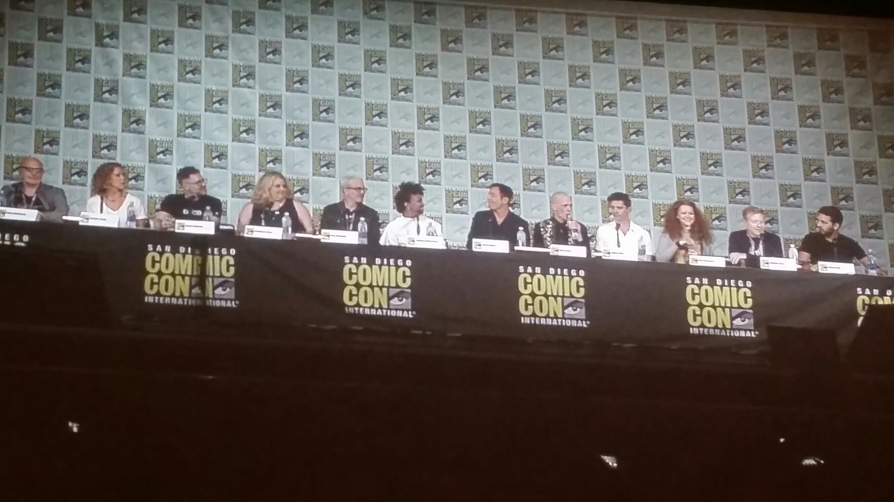

Another year of San Diego Comic-Con has come and gone, It's always such an amazing experience and is truly one of my favorite times of the year. This was my fifth consecutive year attending the convention-- It's such a privilege to be able to attend this wonderful event with my friends and family. All thanks to my sister and my brother-in-law, Jessica and Max! They're both professionals in the film and telivision business so they're granted professional passes and two for their guest. Under normal circumstances it is extremely difficult to get regular Comic-Con badges, potential attendees enter a lotto system to buy passes, there are never any guarantees. Thanks to Jessica and Max I've been able to attend five years in a row! This year was especially special because I was able to bring along my longtime girlfriend Julie! We've tried getting her out to the convention before but for one reason or another another it hadn't worked out until now.
To recap my experiences this year let's start from the beginning. Julie and I flew in from Orlando to Los Angeles to stay with Jessica and Max for the first half of the week. After a few days of fun in LA it was Thursday and time for Comic-Con! Just about every year when I travel to the Con I take the Amtrak's Pacific Surfliner, a passenger train that travels from Los Angeles to San Diego. This works out great because as you can imagine with over 120,000 people attending the convention there's going to be some pretty bad traffic. Taking the train you avoid the traffic, kick back, read a book and have a beautiful view of the Pacific Ocean.
The train ride last about three hours which goes by quickly enough with a good book in your hand. I've been reading "The Name of the Wind" by Patrick Rothfuss since the initial flight to Los Angeles. Once the train had arrived to the San Diego station we got off and started the walk to the bus shuttles. We were staying at a hotel for the weekend and still had all of our luggage so as much as we would have loved to go ahead and jump right into the con we needed to drop off our stuff and check in at the hotel. Comic-Con has an awesome partnership with the local hotels, they run a complimenaty shuttle service to and from the convention. It saved us from having to use UBER or Lyft.
Most of the time these shuttles are great -- unfortunately the very first bus we took drove right past our stop! A few other groups and us were less than happy. We had to take another bus and do the whole route all over again which can take about 30 minutes depending on traffic. When we finally arrived at our hotel we had to stand in this huge line for checking in which took probably another half an hour. We were told our rooms weren't ready yet which I expected because this is what they tell us every year when we first check into a hotel for Comic-Con. Not a problem however we didn't want to hang out in our hotel room anyway we were eager to go back downtown for Comic-Con! We checked our stuff in with the bellboys to look after and we hoped on the next shuttle to take us back to the convention.
After another shuttle ride it was finally time to step into the convention! When entering the convention center first you walk through these glass doors. Each door has an attendee accompanied with it making sure you have a Comic-Con badge and that you scan your badge up to these chip reading machine. When the light turns green you're good to go! Each Comic-Con badge has a chip inside to work with these machines. They do it this way to avoid any people trying to gain entry with counterfeit badges, a problem they had years past.
Now we were in the main lobby room. Going through one more set of doors would take us to the main exhibitor hall, or up the escalators lead upstairs to most of the hallways and rooms that run panels all weekend. The exhibitor hall is half the fun of Comic-Con and a great starting point for someone who has never been to the convention before. Thursday is also one of the best days to explore the exhibitor hall--it's still pretty busy on Thursday but nowhere as crazy as on Friday or Saturday. If you planned on doing any shopping at the convention Thursday is the day to do it.

Describing the sensation of walking through the exhibitor hall is no easy task. First step in and we're greeted by an array of lights, sounds, and movement. There is a giant Nickelodeon sign hanging from the ceiling with all kinds of Nickelodeon inspired art swirling around it. This is the norm for bigger companies selling their product on the exhibitor hall, huge extravagant displays that demand your attention! The aisle ways are constantly full of passionate fans hurrying to get to their next destination. It's not always easy maneuvering around the exhibitor hall, there is so much to see and do it's easy to get overwhelmed by it.
Its helps when you have an objective on the exhibitor floor, such as something that you want to buy from a specific booth. Doing this helps avoid getting overwhelmed and unsure what direction to go in, many times leading to walking around in circles. Having a set objective allows you to cover more ground efficiently and can take you through paths you may not have taken otherwise, allowing you to see more of the exhibitor floor. Julie and I hadn't plan on picking anything up from a booth beforehand, however Max had a few stickers and pins he was wanting us to pick up from a couple different booths.
The exhibit hall is organized by numbers. Each row has a sign above it hanging from the ceiling showing what row it is. For example, Chris Sander's booth was #4616. He was in row 4600, so if you looked up at the ceiling sign that said row 4600 you would have known his booth was somewhere in that row. Many exhibitors show their number somewhere on their booth so you can pinpoint exactly what section you're in by looking at the booth numbers around you and following the numbers leading to the shop you are looking for. If you were looking for a booth in row 4700, you would know it was the next row over.
After a few hours adventuring the exhibit hall we decided we would go explore upstairs some. We took the escalators up and starting walking through the hallways where they hold many of the panels the convention host. While we were walking by a room I had to stop because I thought I heard a familiar voice, I was right! It was Adam Scott, most famously known for playing Ben Wyatt on Parks and Recreation. They were doing a panel on a new show coming out this fall called "Ghosted"-- it's a show that's described as a mix of the X-Files and Ghostbusters. Alongside Adam Scott was Craig Robinson, an actor that has starred in many comedy movies that I'm also a fan of. We walked in a little late to see any clips from the show but we were still able to listen to most of the panel speak about making the show and what it's going to be about.

That's just some of the magic of Comic-Con, you can wander around with no specific destination in mind and end up walking into something cool. You can catch a panel about a new show, often with the actors and creators present. In a few years if the show is successful and builds a base the panel will most likely be in one of the bigger rooms such as ballroom 20 or the indigo ballroom and have a huge line you'll have to wait hours in line to see it. I remember when Steven Universe was on its first season and I was able to walk right into their panel to campout for the Regular Show panel that was on after. Now Steven Universe is a beast all of its own and you would have to wait at the minimum 3 hours to get into their panel.
After the panel for Ghosted ended there was another panel on our list, the "TBS Gets Animated panel". The start time for that panel was still a couple hours away, so we decided to go early to see if there was another panel going on beforehand we could sit through. We walked into "Disney Kingdoms: Theme Park Stories with Marvel Comics." A group of comic creators talking about a series they had worked on with Marvel, telling with stories made around Disney theme park attractions such as The Haunted Mansion and The Enchanted Tiki Room. It was actually a really interested panel, I'm a big fan of the Disney parks. The creators for these comics produced some really fantastic artwork depicting the attractions we all know and love. This is another example of how there is constantly so much cool stuff going on at Comic-Con you can practically walk into any room and find something interesting.
After the Disney comic book panel ended a few minutes went by and the TBS animated panel began. The panel consisted of Matt Weitzman, Co-Runner of "American Dad". Carson Mell, creator of the upcoming show "Tarantula". J.Q. Quintel, creator of "Regular Show" and the upcoming show "Close Enough". And lastly Olan Rodgers, long time Youtuber and creator of the upcoming show "Final Space." If you haven't noticed the trend yet for this panel it's that 4 out of 5 of the shows are brand new starting their first season soon. It seems like TBS is trying to develop their own line of "mature" animated series to compete with Fox and Adult Swim, and it's looking pretty promising.
I wanted to see this panel because I am a big fan of J.G. Quintel and Olan Rodgers. J.G. Quintel created "Regular Show" which is one of my favorite animated TV shows from this decade. I've been to some of his panels before, he's just such a cool guy and it's always a pleasure to listen to him speak. "Close Enough" seems like a spiritual successor to "Regular Show". The animation style is very similar, J.G. does the main voice again and the humor seems similar albeit much more inappropriate and ridiculous. These are all goods things and I cannot wait until it premieres.
I have been watching Olan Rodgers online for 10 years now and I couldn't miss the chance to see him in person and hear him talk about his new TV show "Final Space".The clip they showed us was a work in progress, but from what I could get out of it "Final Space" is going to be a great animated science fiction show. It promises to have excellent animation and a good mix of humor and seriousness. Tone wise it's a bit tamer than the other shows premiered at the panel, a good choice-- if it was too ridiculous it could distract from the seriousness of the science fiction aspect of the show."Final Space" looks like it's going to be something really special.

After the panel ended it was around 7:30pm, the exhibit hall just closed for the night and we didn't see any other panels on the schedule that captured on interest. We decided to call it a day and head back to the hotel room. At this point we were feeling pretty hungry and even though there is so much amazing food in the down town San-Diego Gaslamp district, Julie and I were starting to feel a little exhausted from a mix of traveling and a day of Comic-Con. Rather than wait an hour to eat at a restaurant, we favored splitting a small pizza from our hotel's cafe. After diner we reclaimed our belongings from the bellboys, made our way to our room on the 5th floor and quickly went to bed so we would be well rested for the next day!
Friday was one of the best and one of the worst of the weekend. We started the morning off by getting breakfast at "Cafe 222", a great breakfast joint in the Gaslamp that has become a tradition of mine to eat at while attending Comic-Con. Not surprisingly they were busy, about a half hour wait for a table. Time went by quickly enough and we were able to sit down and eat. After an awesome breakfast consisting of peanut butter and banana French toast for me and a waffle for Julie, it was time for us to head to the line for the Rick and Morty panel! The Rick and Morty panel was being hosted in the Indigo Ballroom which is actually inside of the Hilton Hotel right next door to the convention center. Now here's the bad part, the Indigo Ballroom is one of the hardest rooms to get into and the line is entirely outside in the sun without any kind of shade coverage. You can tell where this is going...
For a Comic-Con veteran I made a huge rookie mistake. That Friday I received what was likely the worst sunburn of my life. I knew I needed sunscreen and I kept telling myself I was going to pick some up beforehand, but I never did. To all reading this, please use sunscreen. In retrospective I probably had time to walk to the Ralph's store in the Gaslamp and come back in time to keep my place in line seeing how we waited about 3 plus hours to get into the ballroom but at the time we didn't know how quickly or slowly the line would move and didn't want to take our chances getting out of line and missing Rick and Morty. Julie got sunburned pretty badly as well but thankfully not as bad as I did. She was able to mostly shield herself with a magazine given out by a promoter, I wish we had taken two.
But it was all worth it right? Well mostly, unfortunately we were not able to get in the room in time for the "Rick and Morty" panel. In reality we probably needed to be in line an hour earlier at least. I had a feeling we might have been a little late getting in line while we were getting breakfast. We were so hungry though, we didn't have a big dinner the night before so we didn't feel too bad about eating beforehand. You do so much walking around during Comic-Con the energy is 100% needed. "Rick and Morty" is such a beloved show it wasn't too surprising it was so hard to get into. There's always next year, and of course next year we WILL bring sunscreen.

Not all hope was lost though, there was still the "Mike Tyson's Mystery's" panel and "Bob's Burgers" which are shows we're both big fans of. But before that was the "Robot Chicken" panel. I didn't expect Robot Chicken to have a panel in the Indigo Ballroom, or to have a panel at Comic-Con at all for that matter. To be completely honest I didn't even know Robot Chicken was still on TV. I used to watch it a lot when I was in middle school about 10 years ago but since then I haven't heard much about it. The panel wasn't very good, no one seemed like they wanted to be there. Showrunner Seth Green didn't even show up for the panel and he's basically the face of the show.
Next up was the "Mike Tyson's Mystery's" panel. The show is styled like the old school cartoons from the 70's such as "Scooby Doo" and "Johnny Quest" starring Mike Tyson as himself, a retired boxer who runs a mystery solving business alongside with his daughter "Yung Hee", a flamboyant ghost named "Marquess of Queensberry" and a sarcastic alcoholic pigeon named "Pigeon". The show is completely ridiculous and hilarious and very underrated. Sadly the panel didn't live up to the quality of the show. It started out with the panel's moderator making the announcement that Mike Tyson wouldn't be on the panel after all, after originally being scheduled to appear. To try to make up for Mike not appearing they premiered a second new episode on top of one they had already planned to show.
Sure it was nice to be one of the first ones to be able to see two new episodes, but watching episodes of a show we already know we love isn't the reason why we go to these panels. When the episodes ended show creator Hugh Davidson and voice of "Yung Hee" Rachel Ramras took the stage... and that was it. I could help to think to myself "wow". I don't think I've ever been to a panel with only two guest on it. It seems like they were really relying on Mike Tyson to show up to be the main focus of the panel. It showed too, the entire panel seemed improvised and not with a whole lot of direction. I applaud Davidson and Ramras though, they tried to entertain an entire ballroom of fans without much material to work off of. Mostly they talked about how to show was created, how they got Mike Tyson in as the main role, and what it was like working with somebody like Mike Tyson. I was a little disappointed they didn't have the two other main characters on the panel Norm Macdonald who voices Pigeon and Jim Rash who voices Marquess. It's pretty unusual not to have most of a cast of a TV show at a Comic-Con Panel, let alone missing three out of four. After a quick Q&A session the panel wrapped up and the next one would be starting in a few minutes.
Next up was Bob's Burgers and it just about made up for the last two subpar panels. The panel had the entire main cast from the show-- H. Jon Benjamin voice of Bob, John Roberts voice of Linda, Dan Mintz voice of Tina, Eugene Mirman voice of Gene, Kristen Schaal voice of Louise and Larry Murphy the voice of Teddy. Alongside the main voice cast were showrunners and producers. This group was the perfect example of how to do a great Comic-Con panel and what everyone should expect from seeing a panel in one of the higher profile panel rooms such as the Indigo Ballroom. The panel started off with a preview for the next season and provoked laughter from the entire room. When the clip ended the cast went into detail what we could expect from the upcoming season. There was always such strong charisma and energy between the cast members on stage, you could really tell it was a great group that loves what they do and the people the work with. It was for sure our favorite panel of the day and maybe even the whole convention.

After the panel ended we headed out, the Archer panel was next but we decided we had seen enough. At this point in the day it was around 5:30, Julie and I went to explore the exhibitor hall for the last couple hours until they closed for the night at 7:30. After closing we were pretty hungry, only having a couple of energy bars since breakfast. For diner we used our $50 voucher coupon we received from the Crowne Plaza Hotel. See, we had originally had reservations for the Crowne Plaza however a week before the trip we received an e-mail informing use that the Crowne Plaza overbooked for the weekend and was forced to send a chunk of their reservations to the Town and Country Hotel across the street. Of course this was really annoying, though I had stayed at The Town and Country in previous years so at least I was at ease knowing that it was a decent place. To apologize the Crowne Plaza gifted us the $50 voucher for use anywhere in the Crowne Plaza and a refund of one of the nights.
We took the shuttle bus to the Crowne Plaza and quickly found their restaurant. The diner was pretty good for a hotel restaurant. I got a burger, Julie got a chicken quesadilla and we shared some chicken wings. We finished up paid our bill and got back on the shuttle to ride back to our hotel. There was an MTV concert event going on in Petco Park that night we had originally thought about attending but the bands announced that would be playing weren't any we had ever heard of. So without having any other ideas we decided to call it a night.
We woke up Saturday morning ready for our last day of Comic-Con. Sunday is the actual last day of the convention but normally by the time Sunday morning comes around I'm exhausted and satisfied enough to leave that morning. There's not a whole lot going on Sunday, mostly the lower key panels and the attractions close around the 4'oclock. However Sunday is one of the better days to do some shopping in the exhibitor hall, as long as you're not after exclusive, those are long gone by Sunday unless they're held specifically for a Sunday release.
For Saturday there were a few panels we had on our radar and a couple attractions we wanted to see. However that didn't quite go as planned. Saturday is absolutely the busiest day of the convention, it can be a little ridiculous at times. We wanted to do the Game of Thrones experience, however the Comic-Con Unofficial Blog (a great resource for the convention by the way) was reporting around eight hour long lines... not something we were up for. We decided to go ahead and get in line for a couple panels that sounded fun hosted in Ballroom 20. Our priority was the "American dad" panel, but there was also "The Simpsons", "Family Guy", and "Star Trek Discovery" going on that day in ballroom 20 and we were lucky enough to catch them all. The line for Ballroom 20 is also much more manageable thankfully. The first portion of the line is along the wall inside the hallway outside Ballroom 20 in air conditioning, when it does make its way outsides the line is covered by tents to protect you from the sun. I would still recommend sunscreen because there are still a moment or two you may be waiting in direct sunlight, we had made sure to pick some up at the Ralph's grocery store in the downtown area beforehand-- learning from the previous day's mistakes.
Thankfully we got in line at the perfect time. We were in the outside line but only about the third tent back, out of a total of around 10 tents. It didn't take much longer for all the tents to fill up with the line and start extending past the tents. We first got in line around 10:30, a little after 12:00 when the Simpsons panel was starting we were able to get in the ballroom and find out seats! Now I am a very divided Simpson's fan, I absolutely adore the first 7 seasons of the Simpsons and believe it's some of the highest quality television ever created. After that not so much, the next few seasons were watchable but nowhere as great as the golden years. Around the year 2000 the show became completely unwatchable for me and it just seems to get worse and worse every year.
Despite that when I see the creator Matt Groening, showrunners and voice talent on stage I revert back into that Simpsons fan from middle school and start to freak out a little bit inside from excitement. The only voice actor, or should I say voice actress that was there was Nancy Cartwright. However she always does such a great job with the panels it doesn't even feel like we're missing anyone else, also helps she voices about half the characters on the show. The panel followed the traditional format for TV shows at Comic-Con. Show a clip of the next season, talk about the next season and what's it been like working on the show and the history of the show then a Q&A session. I really wish I had gotten up to ask a question because Matt Groening was either giving away Simpsons merchandise from his personal collection or doing a quick sketch of one of his characters on a large sheet of poster paper and gave one away to everybody who asked a question.

There's a little bit of strategy when asking questions in Q&A's at Comic-Con. They only let about the first 10 to 15 people in line ask a question so you have to know ahead of time where the microphone is in the room, it helps sitting in a seat on the aisle or close to the aisle. Unfortunately the best seats Julie and I could find at the time were dead in the middle of the seating area making it difficult for me to be able to get up and get a good spot in the line for asking a question. You also need to have the confidence to be able to get in front of a microphone speak to a room full of over 1000 people and speak to famous people. Which is something I do not have, but that hasn't stopped me in the past. Last year I asked a question at the American Dad panel and I swear I almost passed out. Another hard part of asking questions for panels is actually being able to come up with a good question, if you know you want to ask a question for a Q&A try to think of the question while waiting in line before you get in the panel so you have it ready and set.
After The Simpsons panel ended next up was "Family Guy". The "Family Guy" panel was led by show creator and the voice of many of the characters on the show Seth Macfarlane. Seth voices characters such as Peter, Stewie, and Brian. Also on stage was Alex Borstein, Mike Henry, and Patrick Warburton, the voice of Louis, Cleveland, and Joe. Alongside the voice cast and creator were some of the show's writers and producers. It was cool to see Seth Macfarlane on the panel, last year he wasn't present which was a bummer because he really makes up about half the show. I watched a lot of "Family Guy" when I was younger and even will still watch it from time to time, so it was pretty exciting to be able to see the man who was behind all of it in person.
The panel was done well. It followed the same format I was talking about earlier. Start with a clip from the next season, talk about the upcoming season and the show's history, then a Q&A session. Personally my favorite part was when the voice actors talked about the show's history. Each cast member would talk about how they got their roles and how their character has changed over 17 years. It felt like I was watching a group of lifelong friends reminiscing at a dinner party of all the great times they've had together over the years. Watching this group you could tell they weren't just co-workers on a TV show, they had become a family. That's something really amazing to be able to witness. And the audience that has been watching and following the show for 17 years feels like an extension to that family.

The next scheduled panel was "American Dad", this was the main panel Julie and I wanted to see that day. "American Dad" can be thought as the cousin show to "Family Guy", but I think that is a little bit of an unfair comparison. The show's humor is witty and challenges the viewer. The storylines are more purposeful as well, the show's writers have an actual story to tell and they're not just trying to get from one joke to another. But because of the similar creators and animation style American Dad has never quite been able to get out of the shadow of its bigger cousin Family Guy. Happily it definitely has a following of its own that's been able to help the show survive a transition from network to cable television and through 14 seasons.
The panel had most of the main voice actors from the show including Wendy Schaal as Francine Smith, Scott Grimes as Steve Smith, Rachael Macfarlane as Haley Smith, and Dee Bradley Baker as Klaus. Noticeable missing was showrunner and voice of multiple characters Seth Macfarlane, who was just on stage for the Family Guy panel previously but he had mentioned during the Family Guy panel he had to make it to a panel for his new Sci-Fi parody show "The Orville". The guy sure does keeps himself busy with his many projects. The American Dad cast had so much energy and charisma it didn't even feel like anyone was missing.
The panel was great and the group had a lot of fun with it. Rachael Macfarlane came on stage doing a live performance of one of her many musical numbers from the show. Followed up by Dee Bradly Baker who came out singing but without any background music like Macfarlane had. It was unclear if this was done intentionally or not, but with the way Dee Bradly Baker was acting it seemed like a genuine mistake making it even more hilarious and totally in line with his character Klaus. I was waiting for Scott Grimes to start up one of his songs. Out of everyone he's probably the best known for his singing in the show, sure enough in the middle of the panel he broke out into song. This was another example of a great group that loves what they do and has a lot of fun with it.

The last panel we saw during the weekend was "Star Trek Discovery", the new Star Trek television series premiering this fall! This was one we hadn't originally planned on seeing or even knew it was after the American Dad panel, but once we realized we knew we had to stay and watch. It's the first new "Star Trek" T.V. series in 12 years! I'm not biggest "Star Trek" fan compared to others, I've watched a little bit of the original series and most of "Next Generation". Everything I have seen I have loved and I've been meaning to watch more of it. To be able to see the first Comic-Con panel for a brand new "Star Trek" TV show felt like a huge deal. A large portion of the cast of the series and some of the showrunners were on the panel.
Sonequa Martin-Green plays Michael Burnham, the main character of the show but not the captain of the ship, seems like they're mixing it up a little bit this time. Apparently she is also the adopted human sister of Spock from the original series. James Frain plays Sarek, Vulcan father of Spock and surrogate father of Michael Burnham. Doug Jones plays Saru, a Kelpien which is a new species of alien in the "Star Trek" universe. Anthony Rapp as Paul Stamets, Paul is notable for being the first openly gay character in the "Star Trek" series. Jason Isaacs plays Gabriel Lorca the captain of the Discovery space ship, your traditional James T.Kirk or Jean-Luc Picard role. Shazad Latif plays Ash Tyler, Starfleet lieutenant and a former prisoner of war. Mary Wiseman plays Silvia Tilly, a cadet in her last year of the Starfleet Academy, similar to Will Wheton's "Wesley" character from The Next Generation. Also on the panel were the show's writers and producers.
They showed a brand new trailer for the show that looked more like a trailer for one of the recent movies, hopefully they only edited it that way for an attempt to attract new viewers. The crew talked about what it was like being tasked with creating a new Star Trek TV series, and how they cast their roles for the show. My favorite part of the panel was when Doug Jones got in front of the table the cast was sitting at and showed off his alien walk he had created for his character Saru, it was very freaky in a cool way. Imagine a 6"4 alien trying to walk down a fashion show catwalk. Doug Jones also told a story how he had to fight the producers from them making him wear a fake ass with his costume, his argument was that his character is an alien and not having an ass makes his character seem even more alien.
It's seem like the show has a strong cast from what I could tell seeing them interacting with each other on stage. I'm still not sure what kind of "Star Trek" we will be getting with Discovery. Will it be the traditional "Star Trek" like the old series were with a perfect mix of philosophy and action? Or more like the recent film trilogy which was more constant action ordinated? Myself and most "Star Trek" fans are really hoping for the more traditional approach but we won't really know until the show premieres. The writers were practically promising that the show won't disappoint and the fact that the show will be broadcasting on a nontraditional format makes me think that they might make the show "Star Trek" fans want and not the kind of show the average network T.V. viewer would want.

After the panel ended we decided to go back into the exhibitor hall to get some souvenirs to take home. Saturday is the worst day to do any shopping in the main hall, at the time I had underestimated how bad it would be. It was nearly impossible to get around in there, entire walkways were constantly packed. Sometimes there would be stoppage for no apparent reason, forcing us to turn back and go another way. We walked up to a booth that was selling original tee shirts. We looked a little bit and saw some designs we liked, it was also two for $30 which for Comic-Con is a pretty good deal. Julie got herself a "PikaChewie" tee which had a design of a Pikachu from "Pokemon" fused with Chewbacca from "Star Wars". I got myself a "Major League Jedi" tee which had what looked like the batters logo from Major League Baseball on the shirt however instead of a baseball player there was a jedi and instead of a baseball bat the jedi held a lightsaber. The logo had also replaced the baseball itself with the floating sphere weapon trainer from "A New Hope". This shirt was perfect for me because I am a huge baseball fan and a huge Star Wars fan, this shirt took two of my favorite things and fused them in one!
We wanted to do some more shopping but it was so crazy in the exhibitor hall and Julie was feeling pretty uncomfortable by this point so we decided to take a step outside. It was about 5:00 by this time, and we were looking for something to do. We walked over to the "Adult Swim on the Green" event that goes on right behind the convention hall. It's mostly a bunch of State Fair styled games with the Adult Swim twist, the games all give out tickets and you can trade in those tickets for stickers and plushes from Adult Swim shows. After a certain point in the evening they close up their games and bring out a huge projector to air some of their shows in the park. To get into the event you can either wait in the regular line, or you can RSVP beforehand through the Adult Swim website. Normally when you RSVP it makes it much easier to get in, you just show the people upfront the email on your phone and you can walk right in, not this time though. The huge line we walked by that we assumed was the regular line turned out to be the RSVP line. Adult Swim has been doing their On the Green for the last four years and I can't ever remember seeing the RSVP line like that before. Again, with Saturday's at Comic-Con you sort of need to have a "Murphy's law" way of thinking, anything that could have a huge line probably will. It also didn't help that the event was open for the public and not just for Comic-Con attendees.

We didn't feel like waiting in the line so for the next hour we walked around looking and trying to think of something to do. We searched through the schedules to see if we could find any late panels we thought would be interesting, but didn't find one. We looked through the list of different attractions however most of them were getting ready to close and had their lines capped because of it. There was nothing left we could think we wanted to do, so we decided to call it a Con. It felt so abrupt, like there was still so much we needed to do and see. However all good things, even Comic-Con, must come to an end. We walked to the shuttle pickup at Petco Park, said our goodbyes to the convention and headed back towards the hotel.
The following morning we woke up around six and checked out of the hotel. We waited and got onto the shuttle to go downtown, however this time not for going to the convention but for the train station. It took us about half an hour to get there so we were pretty early for our 8:05 train. I'm the kind of person that would rather be super early somewhere, then have any kind of chance of being late. I also know the lines can get really long and we wanted to make sure we had seats. However I may have overestimated the time the lines started. We were the first in line, and stayed the only ones in line for about another hour. Although when 7:30 came along the line I was picturing before definitely showed up, almost all at once. It had even started to wrap around the train station's building so I didn't regret getting there when we did at all.
It was still hard to believe Comic-Con was over for us, it felt like it had gone by so fast. Every year when a Comic-Con ends most people having a feeling that there was so much they feel like they didn't do, you hear this from everyone. The fact is though that Comic-Con is such a massive convention with so much going on, it's impossible for anyone one person to be able to do everything at the convention or even everything on their list. Everyone experiences Comic-Con in their own way, that's one of the things that makes it so awesome! You could finishing reading this article of my experiences and then go on to read someone else's of their experience and it might not even feel like we went to the same convention! Some attendees come for the Hall H panels and wait in line the entire weekend. Some will do nothing but shop in the Exhibitor hall and lineup every morning and race to the booths to collect exclusives. Others are here for work and bring their portfolios to be checked out and critiqued by their idols. Everyone has their own way of doing Comic-Con.
With bringing Julie I wasn't sure what this Comic-Con would be like for me, this was the first year of having someone with me the entire time. In previous years I would spend time at the Con with my sister and Max at different parts of the day but for the most part I was solo. Before I felt like I had an advantage being by myself, I was able to see and do more without any kind of slowdown. But it's definitely a great feeling having somebody along with you the entire time and to be able to enjoy the convention together. This was probably my favorite Comic-Con so far because I got to share it with Julie and I wouldn't want to do it any different. We had a great time and made some great memories and hopefully we're able to do it all again next summer!